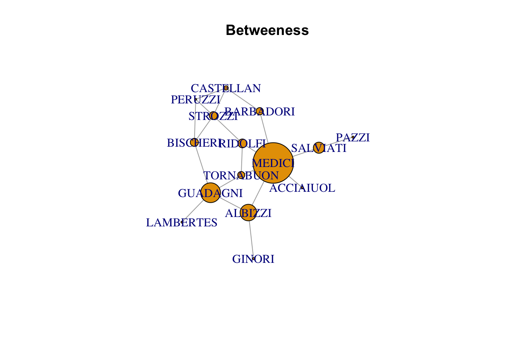
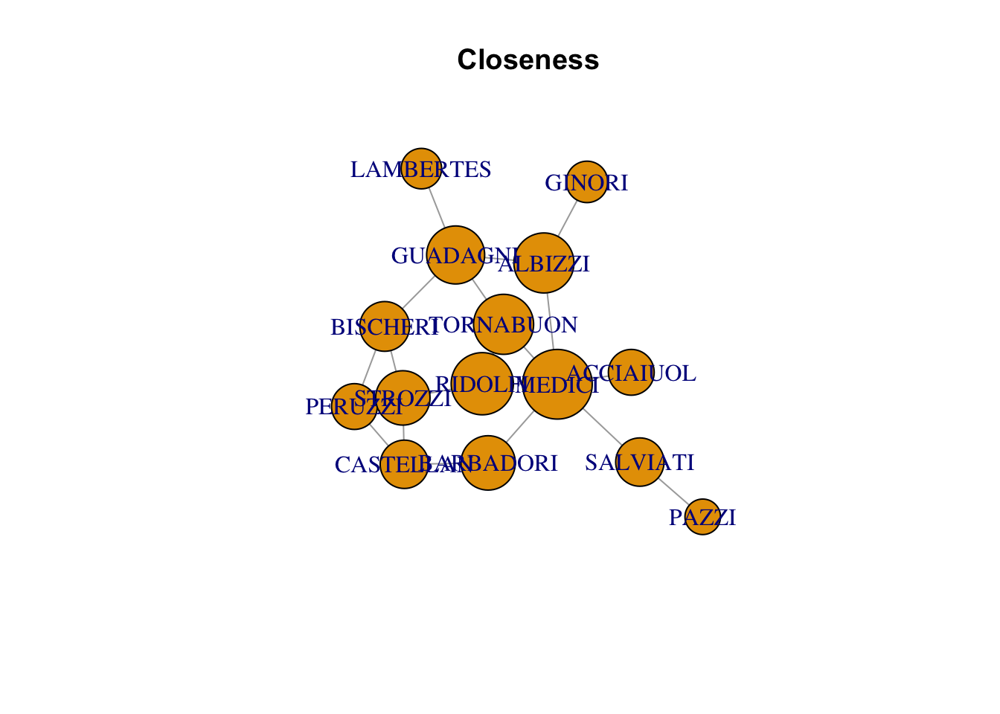
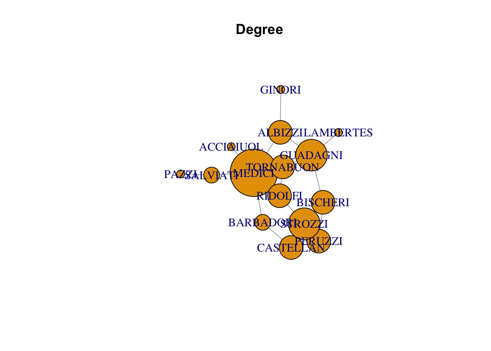
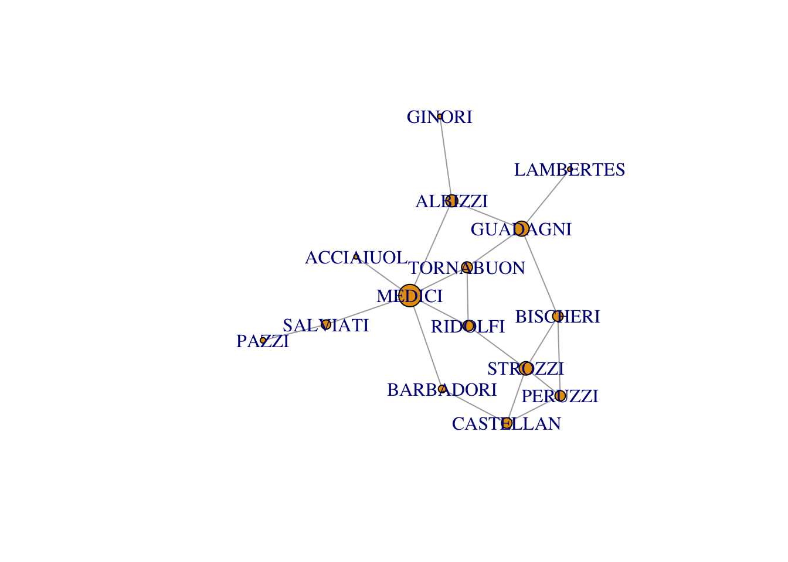

![]()
| FAMILY | ACCIAIUOL | ALBIZZI | BARBADORI | BISCHERI |
|---|---|---|---|---|
| ACCIAIUOL | 0 | 0 | 0 | 0 |
| ALBIZZI | 0 | 0 | 0 | 0 |
| BARBADORI | 0 | 0 | 0 | 0 |
| BISCHERI | 0 | 0 | 0 | 0 |
| CASTELLAN | 0 | 0 | 1 | 0 |
| GINORI | 0 | 1 | 0 | 0 |
| GUADAGNI | 0 | 1 | 0 | 1 |
| LAMBERTES | 0 | 0 | 0 | 0 |
| MEDICI | 1 | 1 | 1 | 0 |
| PAZZI | 0 | 0 | 0 | 0 |
| PERUZZI | 0 | 0 | 0 | 1 |
| PUCCI | 0 | 0 | 0 | 0 |
| RIDOLFI | 0 | 0 | 0 | 0 |
| SALVIATI | 0 | 0 | 0 | 0 |
| STROZZI | 0 | 0 | 0 | 1 |
| TORNABUON | 0 | 0 | 0 | 0 |
Marriage Networks of Florence
This post takes the example provided in Kosuke Imai’s Quantitative Social Science: An Introduction. It provides some exploration of network analysis through looking at the florentine dataset which counts the marraige relationships between several Florentine families in the 15th century. My historical side knows that our analysis should show that the [Medici Family] should appear at the center of all of the political intrigue. Let’s see if the analysis plays out.
Formatting the Data
The florentine data set comes as a dataframe. In order to work with igraph it will need to be converted to a matrix with named columns and rows. That conversion can be done here:
Starting Table
Now we need to manipulate the dataframe to turn it into a matrix object so that we can pass it to the igraph package.
florentine_g <- florentine %>%
filter(FAMILY != "PUCCI") %>%
select(-PUCCI) %>%
select(-FAMILY) %>%
as.matrix()
row.names(florentine_g) <- florentine[-12,1] %>% as.vector()Now we need to pass this object to igraph. The path is undirected because there is no ordinality to this data. It does not encode if one family proposed the marriage to the other group. If this were the case then there could be some directedness to the graph. In this case there isn’t so that is the parameter we will pass.
florentine_g <- graph.adjacency(florentine_g, mode = "undirected", diag = FALSE)Now we can plot based on several features:
degree
closeness
betweeness
PageRank
Visualising the Network
plot(florentine_g, vertex.size = betweenness(florentine_g), main = "Betweeness")Warning in plot.default(0, 0, type = "n", xlab = xlab, ylab = ylab, xlim =
xlim, : partial argument match of 'frame' to 'frame.plot'Warning in seq.default(0, cin^2, length = floor(35 * cin) + 2): partial argument
match of 'length' to 'length.out'
plot(florentine_g, vertex.size = closeness(florentine_g)*1000, main = "Closeness")Warning in plot.default(0, 0, type = "n", xlab = xlab, ylab = ylab, xlim =
xlim, : partial argument match of 'frame' to 'frame.plot'
Warning in plot.default(0, 0, type = "n", xlab = xlab, ylab = ylab, xlim =
xlim, : partial argument match of 'length' to 'length.out'
plot(florentine_g, vertex.size = degree(florentine_g)*10, main = "Degree")Warning in plot.default(0, 0, type = "n", xlab = xlab, ylab = ylab, xlim =
xlim, : partial argument match of 'frame' to 'frame.plot'
Warning in plot.default(0, 0, type = "n", xlab = xlab, ylab = ylab, xlim =
xlim, : partial argument match of 'length' to 'length.out'
The Numeric Outputs
floretine_networks <- data_frame(
family = names(closeness(florentine_g)),
closeness = closeness(florentine_g),
degree = degree(florentine_g),
betweeness = betweenness(florentine_g)
) %>%
arrange(-closeness)Warning: `data_frame()` was deprecated in tibble 1.1.0.
Please use `tibble()` instead.
This warning is displayed once every 8 hours.
Call `lifecycle::last_lifecycle_warnings()` to see where this warning was generated.kable(floretine_networks)| family | closeness | degree | betweeness |
|---|---|---|---|
| MEDICI | 0.0400000 | 6 | 47.500000 |
| RIDOLFI | 0.0357143 | 3 | 10.333333 |
| ALBIZZI | 0.0344828 | 3 | 19.333333 |
| TORNABUON | 0.0344828 | 3 | 8.333333 |
| GUADAGNI | 0.0333333 | 4 | 23.166667 |
| BARBADORI | 0.0312500 | 2 | 8.500000 |
| STROZZI | 0.0312500 | 4 | 9.333333 |
| BISCHERI | 0.0285714 | 3 | 9.500000 |
| CASTELLAN | 0.0277778 | 3 | 5.000000 |
| SALVIATI | 0.0277778 | 2 | 13.000000 |
| ACCIAIUOL | 0.0263158 | 1 | 0.000000 |
| PERUZZI | 0.0263158 | 3 | 2.000000 |
| GINORI | 0.0238095 | 1 | 0.000000 |
| LAMBERTES | 0.0232558 | 1 | 0.000000 |
| PAZZI | 0.0204082 | 1 | 0.000000 |
Additionally, the “pagerank” algorithm can be used.
plot(florentine_g, vertex.size = page.rank(graph = florentine_g, directed = FALSE)$vector*100)Warning in plot.default(0, 0, type = "n", xlab = xlab, ylab = ylab, xlim =
xlim, : partial argument match of 'frame' to 'frame.plot'Warning in seq.default(0, cin^2, length = floor(35 * cin) + 2): partial argument
match of 'length' to 'length.out'
Reuse
Citation
BibTeX citation:
@online{dewitt2018,
author = {Michael DeWitt},
title = {A Foray into Network Analysis},
date = {2018-09-17},
url = {https://michaeldewittjr.com/programming/2018-09-16-a-foray-into-network-analysis},
langid = {en}
}
For attribution, please cite this work as:
Michael DeWitt. 2018. “A Foray into Network Analysis.”
September 17, 2018. https://michaeldewittjr.com/programming/2018-09-16-a-foray-into-network-analysis.